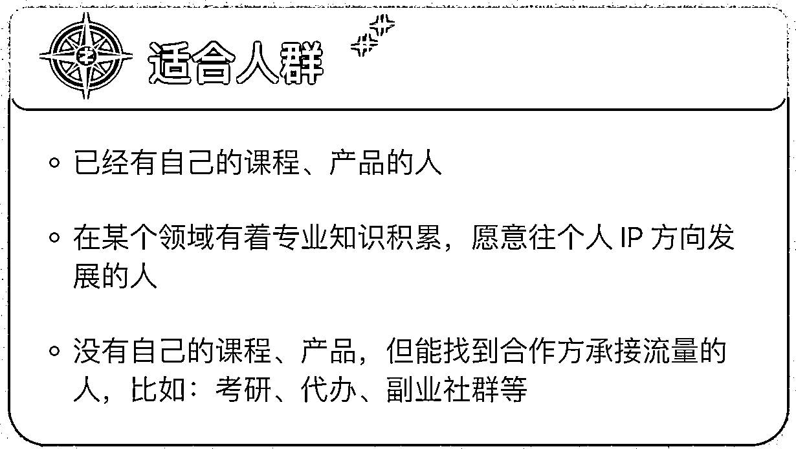
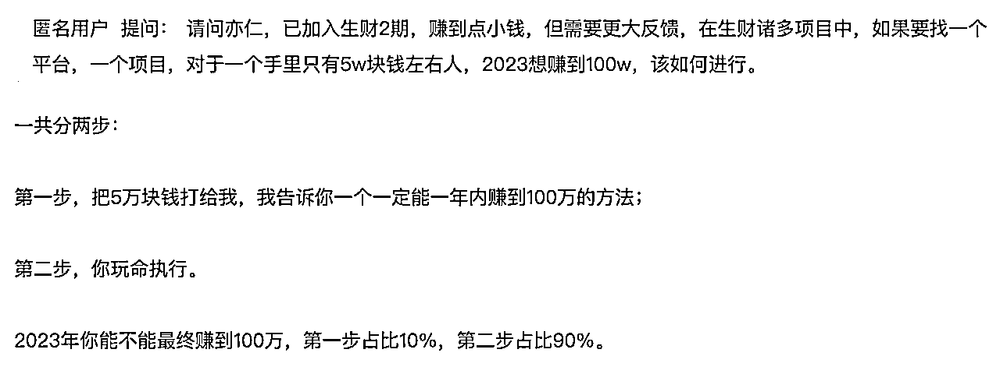

来源：https://trvzn3ack7.feishu.cn/docx/FCc1dPLOBosBQIxNgAgctIgDnLg
上周四加入生财有术，输出了第一篇分析《生财有术赚钱体系梳理（新人启航指南）》
上周五阅读生财有术多个信息迷失后，输出了第二篇分析《如何高效利用好生财有术这个信息引擎？》
这周一建立项目筛选思路后，输出了本篇分析，手把手和大家分享我是如何建立一套筛选原则，快速筛选出合适自己的项目，希望对各位有用
什么是前方有路的项目？这里指的是已经被验证过的成功项目
生财有术内有多个频道：风向标、精华帖、航海实战、圈友发布的动态文章等，那里面有哪些是已经被验证过的成功项目呢？这里取决于你是否知道这些频道都有什么内容以及作用，如果你还不太熟悉的话可以看 HEXIN 圈友的精华帖 生财10问，测一下你对生财的使用方法了解有多深？
这里咱们继续讲，那生财有术内有哪些帖子会分享已经被验证过的成功项目呢？精华帖和航海实战
精华帖中圈友，会分享自己的成功项目，这里不就是大写地和你说“此路可通“吗？
航海实战不仅告诉你前路可通，甚至还告诉你可以怎么走，这难道不就是明晃晃带着你抵达宝藏吗？而具体是否要这么走，以及走多块，什么时候到达就是自己的执行力了。此处附上一个 2 月的航海实战上岸率：85.5%，这个数字难道还不够吸引人吗？数据来源于张静伟@生财有术 2 月航海数据同步
原因一：赚钱和创业最大的风险是前路迷茫，你不知道前路是否通，不知道前路是否有宝藏，不知道自己的努力是否会打水漂。但现在有人告诉你，前方有路，那剩下怎么走、走得多快就是自己的事情了
参考文章：亦仁：应该怎么看生财有术精华帖？
原因二：承认我们都是普通人，没法做到因为相信所以看见，但我们都可以因为看见所以相信。有时候普通人的成功项目，意义就是给自己带来一丝信念
参考文章：生财圈友关心的20个问题
到此，我们筛出了第一层项目：精华帖与航海实战的项目，此处我们先选取航海实战的项目，选取原因在于我们都是普通人，先选取前路通畅且有明确路线的项目，能提升我们赚第一桶金的概率，进而一步步增加我们的成功惯性
考虑到项目有时效性，因此截取的是 2 月份的航海实战项目：
| 一级分类 | 项目 |
|---|---|
| 微信 / 视频号 | 朋友圈运营 |
| 交流/学习 | 风向标共读 |
| 小红书 / 美团 | 小红书店铺 |
| 抖音 | 抖音 SEO |
| 趋势 / 出海 | AI 绘画 & ChatGPT |
| 技能 / 成长 | 资料整理 |
到达这一步，我们需要建立一个项目原则，帮助我们去筛选真正对我们合适的项目
根据之前写的文章《生财有术赚钱体系梳理（新人启航指南）》，项目筛选原则包含几点，结合个人当前条件，目前最为重视的几点是【进入门槛成本不高】【兴趣能力圈范围内】【收益天花板较高】【能积累复用资源】，【对受众产生价值】我理解每个航海实战项目都是满足的，因此也直接隐藏掉；另外几点也可以先隐藏掉，暂时先不关注
那现在要做的就是大概了解下每个项目的内容，然后制作一份表格来评估每个项目
首先请出亦仁老师，贴上文章链接：2月航海哪条船更适合你？
亦仁老师大概介绍了每个项目的思考，大家可以参考了解下每个项目
选择一个项目，需要考虑自己是否喜欢这个项目，以及自己是否有对应的个人能力，还有对应的相关资源帮助自己落地这个项目。
1、兴趣：虽然亦仁老师在 《让赚钱思路更加开阔的 7 个小建议》 提到过“你的各种自我设限，你的每一个偏见，都在阻碍你拓展思路，进而影响到赚钱。微商、传统行业、电商、保险，甚至传销，每一个在这个世界上真实存在的事情，都值得去认真观察。”但是在最早期的时候，还是倾向于先选择自己感兴趣的项目，否则担心自己会失去动力
2、能力与资源如何评估，除了可以梳理自己是否有能力与资源，也可以看航海项目的适合人群来比较一下

以下是我筛选掉一些非兴趣和非能力资源内能做的项目
| 项目 | 适合人群 | 评估 | 决策 |
|---|---|---|---|
| 视频号带货 | 爱刷短视频，能及时抓住热点并找到热门商品的人 | 没有很强的兴趣 | 从清单内移除 |
| 快团团社群团购 | 在微信私域中有一定影响力的人 | 没有很强的兴趣 | 从清单内移除 |
| 美团电商 | 适合个人自主创业或夫妻档 | 没有对应的能力资源 | 从清单内移除 |
| 抖音 SEO | 有自己产品的创业者、老板 | 没有对应的资源：没有自己的产品可以销售 | 短期内从清单内移除 |
| 抖音高客单项目 | 有实体经验，希望把线下销售场景转为线上的人 | 没有对应的资源 | 从清单内移除 |
| 抖音游戏推广 | 创作者年轻化，对游戏有一定了解，且熟悉网络用语的人 | 对游戏毫无敏感度和了解 | 从清单内移除 |
| Web 3 入门 | 对 Web3 以及数字资产感兴趣的行动派 | 虽然曾经炒币，但是现在没有那么强的信仰了 | 从清单内移除 |
| 英文工具站 | 对海外市场营销有了解的人 | 有 1 个研发人力，但是短期内用不上，也暂时不想寻找外包做 | 短期内从清单移除 |
| TikTok 短视频带货 | 对从事海外项目赚美金感兴趣的人 | 同视频号带货，没有很强的兴趣 | 从清单内移除 |
| 线下实体引流 | 想通过引流，构建门店私域流量池的实体门店经营者 | 没有对应门店和私域资源 | 从清单内移除 |
结合以上，目前我们在这一轮筛选后，置灰部分项目，剩下的项目见最右侧
| 一级分类 | 项目 | 第一轮筛选后的结果 |
|---|---|---|
| 微信 / 视频号 | 朋友圈运营 | 朋友圈运营 |
| 交流/学习 | 风向标共读 | 风向标共读 |
| 小红书 / 美团 | 小红书店铺 | 小红书店铺 |
| 抖音 | 抖音 SEO | 抖音小说推文 |
| 趋势 / 出海 | AI 绘画 & ChatGPT | AI 绘画 & ChatGPT |
| 技能 / 成长 | 资料整理 | 资料整理 |
提到成本，往往有很多，比如时间成本、金钱成本等等，对于当前时间充裕的我来说，成本指代的就是金钱成本，最好就是能够以极低成本甚至零成本就可以运转的项目
| 项目 | 门槛成本 | 评估 | 决策 |
|---|---|---|---|
| 小红书店铺 | 做小红书店铺要有自己的产品，如果无货源的话资金周转有账期：少则 7 天，多则 15 天，手里周转资金大概 ¥5000 | 短期内不符合，暂时没有靠谱的产品源，也不想投太多钱 | 从清单内移除 |
| 小红书爆款笔记 | 如果没有自己的产品，可以入局小红书吗？ | 虽然暂时没有产品或专业的领域，但是也愿意选择某个领域不断深耕比如学习成长领域 | 清单内保留 |
| AI 绘画 & ChatGPT | 需要有魔法访问 | 条件上周都满足了 | 清单内保留 |
| 公众问爆文写作 | 在某个领域有着专业知识积累 | 写作也是我的兴趣，且历史领域也算属于我喜欢的领域 | 清单内保留 |
结合以上，目前我们在这一轮筛选后，置灰部分项目，剩下的项目见最右侧
| 一级分类 | 项目 | 第二轮筛选后的结果 |
|---|---|---|
| 微信 / 视频号 | 朋友圈运营 | 朋友圈运营 |
| 交流/学习 | 风向标共读 | 风向标共读 |
| 小红书 / 美团 | 小红书店铺 | 小红书爆款笔记 |
| 抖音 | 抖音小说推文 | 抖音小说推文 |
| 趋势 / 出海 | AI 绘画 & ChatGPT | AI 绘画 & ChatGPT |
| 技能 / 成长 | 资料整理 | 资料整理 |
通俗来说，大概率能赚到钱，不会有人想找一个不赚钱的项目吧？那这里如何量化呢，我会去观察航海项目的目标是否和赚钱挂钩，以及如果是，那么上岸率如何，并且抽样看船员日志，用于初步量化赚钱的确定性
| 项目 | 收益评估 | 决策 |
|---|---|---|
| 朋友圈运营 | 朋友圈运营属于长期需要耕耘，短期内可以结合具体项目来看是否需要学习这一项 | 短期内从清单移除 |
| 社群运营 | 中短期内不会有关于社群运营的需求 | 短期内从清单移除 |
| 风向标共读 | 目标服务于培养商业嗅觉和提升商业敏感度，属于长期需要培养，但不属于短期内需要赚到第一桶金 | 短期内从清单移除 |
| 同城聚会 | 目标服务于链接圈友来互相分享认知与资源，属于长期需要建立，但不属于短期内需要赚到第一桶金 | 短期内从清单移除 |
| 精华共读 | 目标服务于了解圈友的项目并获得认知上的收获，属于长期需要持续阅读，短期内可以结合具体项目来看具体的精华文章 | 短期内从清单移除 |
| 资料整理 | 资料整理既能建立系统的输入输出体系，还能带来商业上的变现，是有变现的概率，不过考虑到和小红书资料引流有重合度，因此将其先移除 | 从清单移除 |
| 时间管理 | 时间管理属于底层能力 | 短期内从清单移除 |
| 运动锻炼 | 运动锻炼属于日常必备 | 短期内从清单移除 |
结合以上，目前我们在这一轮筛选后，置灰部分项目，剩下的项目见最右侧
| 一级分类 | 项目 | 第二轮筛选后的结果 |
|---|---|---|
| 微信 / 视频号 | 朋友圈运营 | 公众号爆文写作 |
| 交流/学习 | 风向标共读 | |
| 小红书 / 美团 | 小红书爆款笔记 | 小红书爆款笔记 |
| 抖音 | 抖音小说推文 | 抖音小说推文 |
| 趋势 / 出海 | AI 绘画 & ChatGPT | AI 绘画 & ChatGPT |
| 技能 / 成长 | 资料整理 |
通俗来说，赚钱不用等太久。当前阶段来说，建立及时反馈对我来说更重要，正如亦仁老师在 《让赚钱思路更加开阔的 7 个小建议》 提到过“抓紧赚到第一块钱。延迟满足感，是为了追求星辰大海的目标。我们是普通人，首先要的是信心，给自己创造小胜，之后才能成大胜。也就是建立及时正反馈，积小胜成大胜”
最初有个想法，寻找各个航海实战的教练，了解大多数人在航海实战取得效果的周期，来衡量我是否能接受这个周期。
但是后来考虑到，每个人投入的时间、精力是不同的，拿这个数据很难衡量实际上自己做的效果周期。
还是用亦仁提到的那句话，玩命执行吧，让自己用更多的时间精力缩短耐受时间周期

通俗来说，能赚到更多的钱，以下评估信息来源于 2月航海哪条船更适合你？
这里提醒下：目前我们仅基于有限的认知去评估收益天花板，但天花板并不是静态不变，而是在解决具体问题的过程中，随着产生新的认知而动态发生变化。当你在其中解决了一些问题后，可能会发现更多的痛点，从而找到更多需求和市场，因此收益天花板也在不断上移。
| 项目 | 收益天花板评估 | 决策 |
|---|---|---|
| 公众号爆文写作 | 核心逻辑是微信开始改变文章分发机制，会在很多板块下推荐特定领域和主题的文章，这类文章阅读量可能非常大，这时单纯通过公众号的流量主收益就可以获得不错的稳定收入 | 收益天花板较高，尽管个人写作水平不是很高，但是可以通过 ChatGPT 生产工具帮我来润色一下，还是有展望前景的 |
| AI 绘画 & ChatGPT | 强烈建议每个人，一定要学会与熟练使用 ChatGPT，让 ChatGPT 变成生产力工具 | 围绕 ChatGPT和 AI 绘画开始演化出很多产品和服务，ChatGPT 可以先充当个人在一些项目上的生产力工具；头像需求低频但长期存在且受众较多，可以考虑在小红书或抖音投放 AI 头像做变现 |
| 抖音小说推文 | 项目稳定且有一批人在赚钱 | 小说推文应该还是供不应求的状态，且竞争终局不是一家独大，而是可以多家并存，因此这里还是有较大的空间做的 |
| 小红书资料引流 | 关键词： 可矩阵规模化、低内容制作成本、高用户信任度和精准度 | 暂时没有很明确的切入点，比如提供哪些内容资料，因此作为高优先级的探索项 |
| 抖音图文引流 | 项目稳定且有一批人在赚钱 |
我是老猪，也是虚十七，每天内卷自己输入与输出，希望有一天能成为生财有术这个班级内的卷王